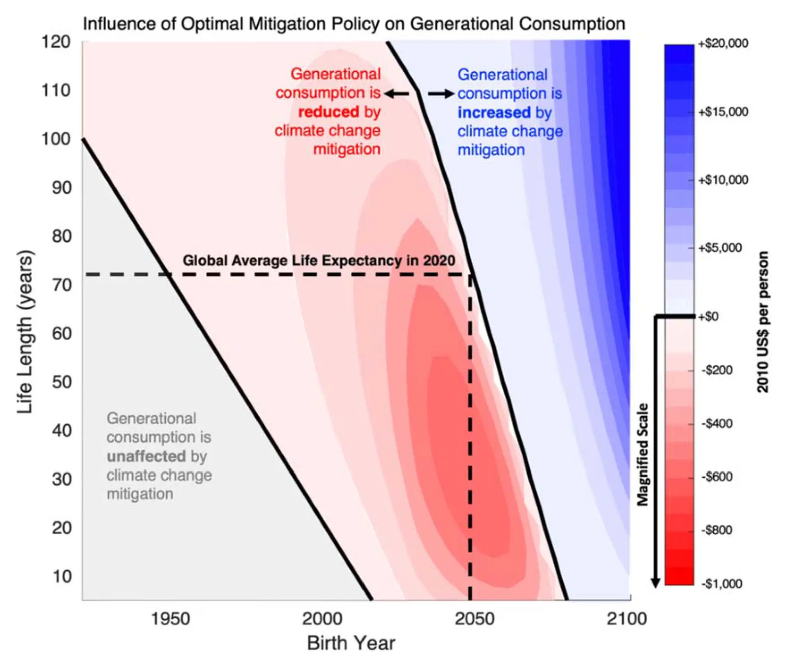

Break-even year — a concept for understanding intergenerational trade-offs in climate change mitigation policy
Key finding. An economically optimal emissions policy does not begin producing global mean net economic benefits until its break-even year, which arrives long enough after enactment that the generation bearing the costs is largely not the generation receiving the benefits.

What question did this paper ask?
Climate-economy models consistently find that immediately restricting greenhouse gas emissions, for instance through a global carbon price, would be in humanity's economic interest quite apart from any environmental argument. Yet such policies have proved extraordinarily difficult to enact.
That is an apparent paradox, and this paper asked whether it resolves once the timing of costs and benefits is made explicit — specifically, whether policies that are optimal for humanity are optimal for the particular generation asked to launch them.
What did we find?
The paper introduces the break-even year, defined as the year in which an economically optimal policy first produces net global economic benefits, as a way of making the intergenerational distribution of a policy's effects explicit.
Applied to DICE, a widely used climate-economy model, the break-even year for an optimal emissions restriction falls decades into the future — on the authors' reading of the results, benefits from abatement are mostly more than half a century away.
Costs, by contrast, begin immediately. The generation that enacts the policy pays for it in full and receives comparatively little of the return.
That gap offers an explanation for the paradox. A policy can be optimal when summed over all future people and still be unattractive to the only people in a position to adopt it.
Why does it matter?
The concept reframes what kind of problem climate mitigation is. If the obstacle were economic inefficiency, better analysis would help; if the obstacle is that the costs and benefits accrue to different generations, then the problem is one of distribution and no amount of demonstrating net benefit will resolve it.
It also indicates where complementary policy is needed. Measures whose returns arrive quickly — adaptation in particular — can align the interests of the present generation with actions that also serve future ones.
Citation, data, and code
Patrick T. Brown, Juan Moreno-Cruz, and Ken Caldeira (2020). Break-even year — a concept for understanding intergenerational trade-offs in climate change mitigation policy. Environmental Research Communications 2, 095002.